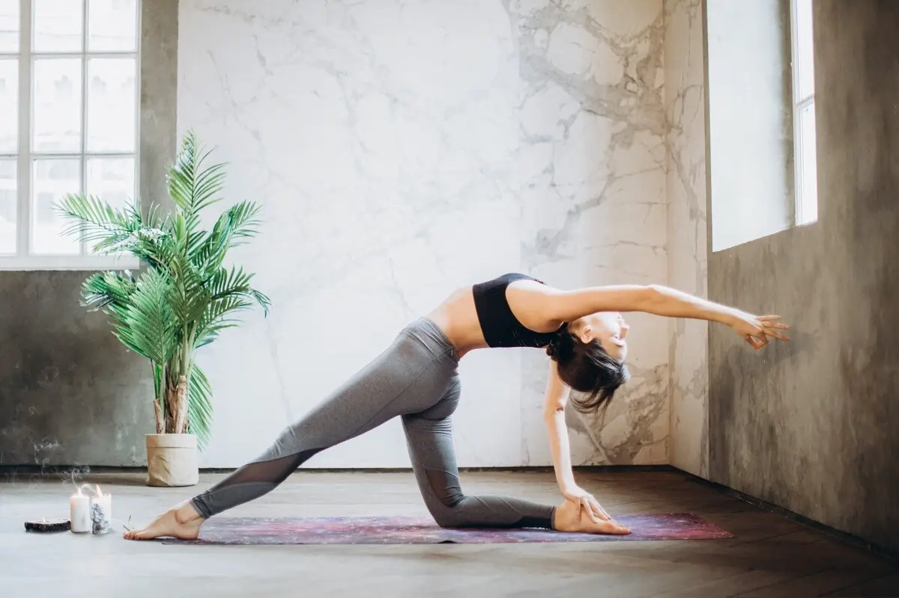

Найдите гармонию в каждом дыхании.
Практикуйте йогу в любое время и в любом месте, улучшая гибкость, дыхание и внутреннюю гармонию.
Практикуйте йогу в любое время и в любом месте, улучшая гибкость, дыхание и внутреннюю гармонию.
Освойте простые ежедневные практики йоги, укрепляйте тело, успокаивайте разум и находите внутреннюю гармонию.
Для лучших результатов выбирайте занятия, где движения выполняются плавно и без спешки, концентрируясь на дыхании и осознанности.
Выбирайте упражнения, где каждое движение плавно переходит в следующее, сохраняя концентрацию и внутренний баланс.
Для максимальной эффективности практики следите за дыханием, выполняйте движения осознанно и без спешки.
Йога — это не просто физические упражнения. Это путь, который преображает вас изнутри. Регулярная практика укрепляет тело, успокаивает разум и открывает новые горизонты для вашего духа. Каждый вдох, каждое движение и каждая асана — это шаг к лучшей версии себя. Постепенно вы замечаете, как энергия наполняет тело, мысли становятся яснее, а внутренний баланс приходит естественно. Йога учит слушать себя, принимать свои возможности и раскрывать свой потенциал. Это путешествие, которое меняет не только ваше тело, но и всю вашу жизнь.
Вирабхадрасана
Уттанасана
Париврита Сукхасана
Сукхасана
Следить за своим прогрессом стало проще, чем когда-либо. Наше приложение позволяет фиксировать каждую тренировку, сравнивать асаны с самого начала и наблюдать реальные изменения в гибкости, силе и выносливости.
С помощью искусственного интеллекта ваши позы анализируются автоматически: приложение подскажет, как выполнить асаны точнее и безопаснее, чтобы каждая тренировка приносила максимум пользы. Постепенно вы увидите, как маленькие ежедневные усилия превращаются в значительные результаты — не только для тела, но и для уверенности в себе и внутреннего равновесия.
Присоединяйтесь к нашему сообществу и откройте для себя мир йоги, который действительно меняет жизнь. Каждое движение, каждый вдох и каждая асана помогают укрепить тело, обрести внутреннюю гармонию и ясность мыслей. Здесь вы получите поддержку единомышленников, полезные советы и инструменты для отслеживания прогресса, чтобы видеть реальные результаты. Начав сегодня, вы делаете первый шаг к лучшей версии себя — к телу, разуму и духу, которые работают в полной гармонии. Йога — это путь, который вдохновляет, наполняет энергией и помогает раскрыть ваш истинный потенциал.